万物皆有裂痕，那是光照进来的地方
量子线路
单量子比特运算
重要的量子比特运算由$2\times 2$的酉矩阵给出：
Pauli阵：
Hadamard门：
相位门：
T门（$\pi/8$门）:
当出现在指数时，Pauli矩阵导出三类有用的酉矩阵，称为关于$\hat{x},\hat{y},\hat{z}$轴旋转的旋转算子，如下定义：
推广地，设$(\hat{n_x},\hat{n_y},\hat{n_z})$是三维空间中的单位向量，则绕其旋转$\theta$的算子定义为：
单量子比特的酉算子都可以写成：
其中：
单量子比特上的酉算子可以写成很多形式，例如旋转的组合乘上全局相移：
（单量子比特的$z-y$分解）U是单量子比特上的任意酉算子，则存在$\alpha,\beta,\gamma,\delta$，使得
证明：因为U是酉的，则U的行列均构成正交标准基，因此可以将$U=\begin{pmatrix}a&b\\c&d\end{pmatrix}$四个自由度写成：
*这其实也告诉我们酉矩阵的一般形式。
由证明，可以看出，若$U=\begin{pmatrix}a&b\\c&d\end{pmatrix}$,
本质在于，U描述的是Bloch球面上一点怎么到另一点的。
例如$|\psi’\rang=U|\psi\rang$，可以先绕Z轴将$|\psi\rang,|\psi’\rang$均转入$zOx$平面，在绕Y轴在$zOx$平面内让它们重合。所以其实就是$|\psi\rang$先绕Z轴进入$zOx$平面，再绕Y轴转至$|\psi’\rang$在$zOx$上的投影，再绕Z轴转到$|\psi’\rang$。
推论：设U是单量子比特上的酉门，则存在单量子比特上的酉算子A,B,C使得ABC=I且$U=e^{i\alpha}AXBXC$。
证明：仍采用$z-y$分解的记号，记
则有$ABC=I$（绕着绕着绕回去了）
又因为$X^2=I$,且$XR_y(\theta)X=R_y(-\theta)$(Ex4.7，不难证明)，所以
所以
证毕
量子门记号(“-“表示量子比特，“/“表示量子比特束)


受控运算
- 受控运算的原型是受控非门（CNOT门），它是具有分别称为控制量子比特（control qubit）和目标量子比特（target qubit）的双量子比特门。相当于$|c\rang|t\rang\rightarrow|c\rang|t\oplus c\rang$，，如果控制量子比特为$|1\rang$，则目标量子比特进行比特翻转，否则不动。
注意
在经过CNOT门后，进入状态:
此时，$|\psi’\rang$将无法写成两个单量子比特状态的张量积，故它是个纠缠态。
CNOT门常用
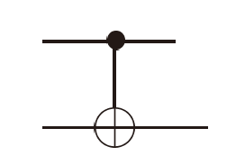
表示。推广地，有一般受控酉算子门：
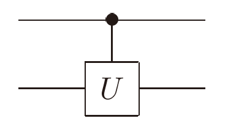
如果控制量子比特是$|1\rang$，则对目标量子比特作用酉算子U。
在Hadamard门作用后，控制量子比特和目标量子比特的角色会互换。在CNOT门作用下：
即第二量子比特为$|-\rang$时第一量子比特$\pm$变换。因此：
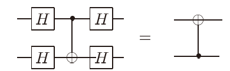
下面考虑如何实现受控任意酉运算。
首先，根据前面推论，任意单量子比特酉算子$U=e^{i\alpha}AXBXC$，其中$ABC=I$。
所以可以先实现受控相移：
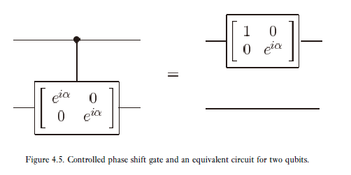
注意到左线路之所以等价于右线路，是因为作为一个双量子比特系统，左线路和右线路都能完成：
下面注意受控X门就是CNOT门，然后加上ABC，则有：
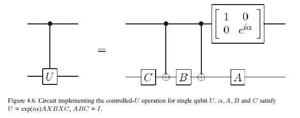
”受控“全部用CNOT门解决。因为$ABC=I$，所以若第一量子比特不为$|1\rang$，第二量子比特也只会不变。
多控制量子比特算子。设共有$n+k$个量子比特，前n个量子比特为控制比特，当且仅当前n个量子比特都为$|1\rang$时，将U（一个k量子比特酉门）作用于后k个量子比特。即：
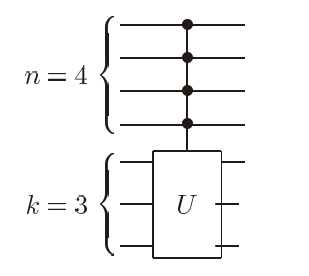
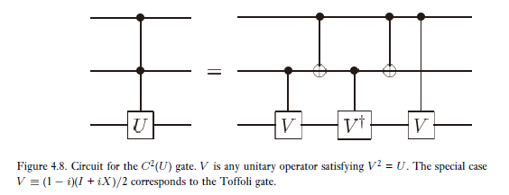
而Toffoli 门（即$C^2(X)$)就可以在Figure4.8中取$V=(1-i)(I+iX)/2$得到。即Toffoli门可以仅通过单、双量子比特门实现，而经典比特门做不到。
最终我们将证明，任意一个酉算子可以仅由Hadamard、相位、CNOT、和T门组合来实现，这实现是一个很好的近似，下图展示了Toffoli门的一个构造，它非常有用：
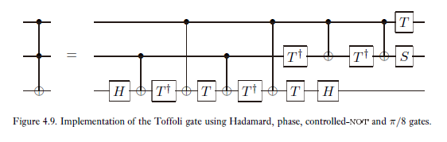
下面解决如何利用已有的量子门实现$C^n(U)$：
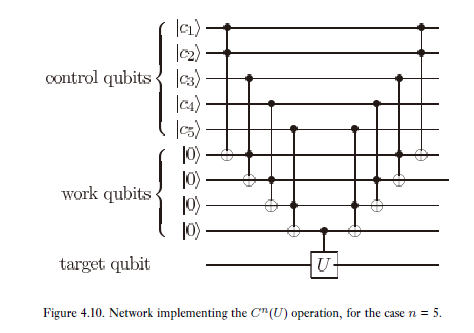
上图是一个实现$C^n(U)$的特别简单的线路，氛围三段，由n个控制量子比特，n-1个工作量子比特和一个目标量子比特构成。
工作量子比特初始都是$|0\rang$ ,而左半边做的工作就是把控制量子比特“与”起来。最后一个工作量子比特就是与的结果。然后右侧再把工作量子比特还原回去。
当然受控门有时候也需要反过来，例如“当控制比特为$|0\rang$翻转目标比特”，这也有记号和等价的控制门：
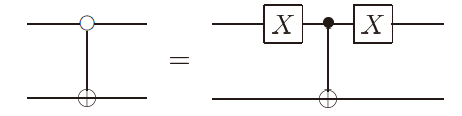
如果控制比特数量大于1时，控制信息可以变成一个二进制串，例如当且仅当控制比特为$|010\rang$时翻转目标比特：
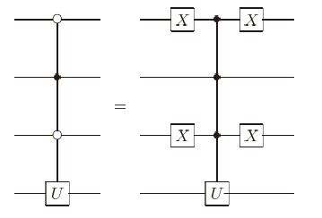
同样，目标量子比特也可以有多个：
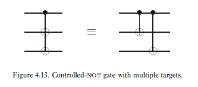
线路恒等式：（令C是第一量子比特做控制比特，第二量子比特做目标量子比特的受控非门，$X_i$表示作用在第i量子比特上的X门，则有：
测量
出现在量子线路最后的元素就是测量。量子线路中的测量符号都表示投影测量，因为一般测量可以通过引入酉变换和辅助量子来用投影测量表示。
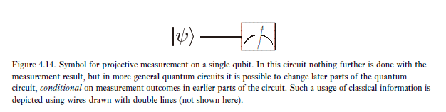
量子测量的两大原理：
推迟测量原理：总可以把测量从量子线路的中间步骤移到线路的末端。如果测量的结果被用于线路的某些阶段，则经典的条件运算可以被条件量子运算代替。例如：
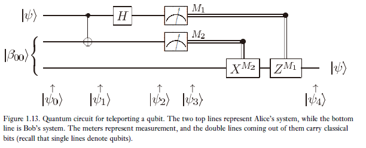
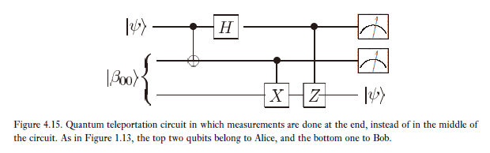
上图两个线路是等价的。图一有一个经典条件运算，即“判断实验结果$M_1,M_2$是否是1”，而这可以转换成量子的受控运算。
其实我认为这也是因为图1中测量后第一、第二量子比特没有继续操作和测量了。
隐含测量原理：量子电路中任何未终结的量子连线（即该连线对应的量子位在演化过程中没有被测量），最终总可以假设为该连线（对应的量子位）已经被测量，而不影响其他量子位的计算结果。
测量扮演着量子世界和经典世界之间的界面，被视为一个不可逆运算。
通用量子门
一组门对量子计算是通用的，如果用这组门的量子线路可以以任意精度近似任意的酉运算。现在描述量子计算的三个通用性构造步骤，这些可以层层推进，最后可以证明Hadamard、相位、CNOT、和T门以任意精度近似任意酉运算。以下三个步骤分别对应要介绍的三个部分：
- 步骤1：任意酉算子可以精确表示为一些两级酉算子的乘积。（两级酉门是通用的）
- 步骤2：所有两级酉算子都可以精确地用单量子比特门和CNOT门表示（$U=e^{i\alpha}AXBXC$）（单量子比特门和CNOT门是通用的）。
- 步骤3：单量子比特运算可由Hadamard、相位和T门以任意精度近似（通用运算的离散集合）。
注：两级酉算子即为一个作用在d维Hilbert空间上的酉矩阵U，但它只作用于两个或更少的分量。也就是说，U至少有d-2行为只有对角线元素为1的单位矩阵。例如d=4:
就是一个二级酉算子，因为其只作用四维向量的前两个分量。
两级酉门（two-level unitary gate）是通用的
考虑一个作用在d维Hilbert空间上的酉矩阵U。本节将说明怎样将U分解成两级酉矩阵的乘积。
先考虑三阶矩阵的情况。设$U=\begin{pmatrix}a&d&g\\b&e&h\\c&f&i\end{pmatrix}$，我们要找出两级酉矩阵$U_1,U_2,U_3$使得$U_3U_2U_1U=I$
则$U=U_1^\intercal U_2^\intercal U_3^\intercal$即为一个两级酉门分解。
先构造$U_1$：
若b=0，则$U_1=I$，否则
此时，$U_1U=\begin{pmatrix}a’&d’&g’\\0&e’&h’\\c’&f’&i’\end{pmatrix}$
其中，重点在于把第二行第一列变成0.而且$U_1U$仍为酉矩阵。
再构造$U_2$，我们希望在这个基础上使得$U_2U_1U$的第三行第一列也变成0。
若$c’=0$，则$U_2=\begin{pmatrix}a’^*&0&0\\0&1&0\\0&0&1\end{pmatrix}$，否则：
此时，$U_2U_1U=\begin{pmatrix}a’’&d’’&g’’\\0&e’’&h’’\\0&f’’&i’’\end{pmatrix}$
由于$U_2U_1U$仍是酉的，可以导出$a’’=1,d’’=g’’=0$。
最后，构造
则有$U_3U_2U_1U=I$。结束。
此时，$U=U_1^\intercal U_2^\intercal U_3^\intercal$即为一个U的两级酉门分解。
再考虑一般情况，例如一个d维的矩阵，则先可以找到两级酉矩阵$V_1,V_2,…,V_{d-1}$，使得$V_{d-1}…V_1V$的第一列第一行除了第一个元素都是0，第一个元素为1。再重复这个过程，寻找$V_1’,V_2’,…,V_{d-2}’$使得第二行第二列也变成只有第二个元素为1的单位向量，以此类推。
最后，有$V_{k}…V_1U=I,U=V_1^\intercal…V_k^\intercal$。其中，$k\leq(d-1)+(d-2)+…+1=d(d-1)/2$
则n个量子比特系统上的酉门可以写成至多$2^{n}(2^{n}-1)/2$个两级酉矩阵之积。
但存在$d\times d$的酉矩阵$U$，它不能分解为少于$d-1$个两级酉矩阵的积。
单量子比特门和受控非门是通用的
证明了d维Hilbert空间上的任意酉矩阵可以写成两级酉矩阵的乘积形式，现在证明单量子比特门和受控非门可以实现n量子比特空间上的任意二级酉运算。这两个结论结合起来可以看到单量子比特门和受控非门可以实现n量子比特上的任意酉运算，于是它们对于量子计算来说是通用的。
设U是一个n量子比特计算机上的两级酉矩阵。设U在状态$|s\rang,|t\rang$张成的状态空间上的作用是不平凡的，其中$s=s_1..s_n,t=t_1…t_n$是状态的二进制展开。令$\tilde{U}$是$U$的一个$2\times 2$的不平凡子酉阵，则$\tilde{U}$可以看作是作用在单量子比特上的酉算子。
现在的目标是基于单量子比特门和受控非门，构造一个实现$U$的线路。为此，我们需要使用Gray码。
连接s和t的Gray码：以s开头t结尾的一组二进制数，使得相邻两个二进制数恰有一位不同。例:
令$g_1$到$g_m$是连接s和t的gray码，其中$g_1=s,g_m=t$。则$m\leq n+1$，因为s和t最多有n位不同。
实现U的基本想法是通过一系列门（比特翻转）实现变换$|g_1\rang\rightarrow|g_2\rang\rightarrow…\rightarrow|g_{m-1}\rang$然后进行受控$\tilde{U}$运算，目标量子比特是$g_{m-1}$和$t$不同的那位，控制量子比特要求剩下相同的$n-1$位和t一样。然后再通过一系列门还原回原本状态。例如酉矩阵：
a,b,c,d是使得$\tilde{U}=\begin{pmatrix}a&c\\b&d\end{pmatrix}$为酉矩阵的任意数。注意到此时$U$只有作用在$|000\rang$和$|111\rang$上是不平凡的。写出连接000和111的Gray码:$(000)_2,(001)_2,(011)_2,(111)_2$设计出如下线路：
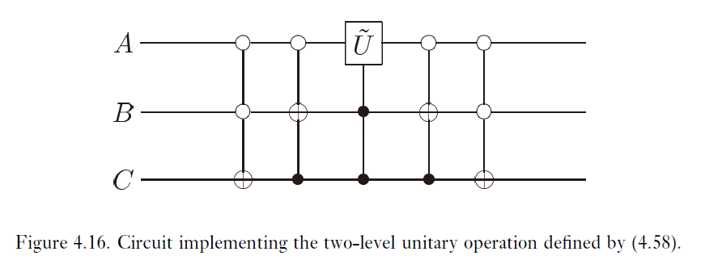
考虑下这样做为什么是对的。因为a,b,c,d行列是0和7，转为二进制即为$(000)_2,(111)_2$即它只作用于这两个状态时是非平凡的。然后将$(000)_2$到$(111)_2$的比特翻转实际上是把这两位通过交换移到某一个量子比特对应的两位上，最后再交换回去。
回到一般情形，实现n个量子比特上的任意酉运算需要$O(n^24^n)$个单量子比特门和受控非门的线路来实现。事实上，酉运算必须用指数数目的门来实现。为了寻找快速量子算法，必须采取和通用性结构不同的方法。
通用运算的一个离散集合
酉算子的近似
首先，一个离散的门的集合不可能精确实现所有酉运算，因为酉矩阵是连续的。然而，一个离散的门的集合却可以去近似酉运算。
设U和V是同一状态空间上的酉算子，U是希望实现的酉算子，V是实际实现的酉算子。定义用V实现U的误差为：
其中max要取遍状态空间中所有的归一化状态$|\psi\rang$。
近似量子线路：
设一个量子系统初态是$|\psi\rang$，并设我要进行酉运算U和V。令M是任一个与测量相联系的POVM元。则
令$|\Delta\rang=(U-V)|\psi\rang$，利用代数运算和Cauchy-Schwarz不等式：
这个式子定量地表示了，若$E(U,V)$足够小，则测量结果误差也会很小。事实上，有式子：
因为利用三角不等式，有$E(U_2U_1,V_2V_2)\leq E(U_2,V_2)+E(U_1,V_1)$然后归纳即可。
再精确地描述$|p_U-p_V|\leq 2E(U,V)$的含义：对任意初态$|\psi\rang$，在状态$V|\psi\rang$上进行测量将给出对$U|\psi\rang$的测量的近似的测量统计值。
假设希望完成一个包含m个酉门$U_1,…,U_m$的量子线路，不幸的是，只能用门$V_j$去近似门$U_j$。为了使实际近似结果和正确结果在一个容许量$\Delta$内，只要保证$E(U_i,V_i)\leq\Delta/(2m)$就行了。
Hadamard门+相位门+受控非门+$\pi/8$门的通用性
首先证明Hadamard门和$\pi/8$门可以用来以任意精度近似任意单量子比特的酉运算。
- 考虑T门和HTH门。T门除了一个不要紧的全局相位，相当于将一个状态对应Bloch球面上的点绕$\hat{z}$轴旋转$\pi/4$。而$HTH=e^{i\pi/8}Rx(\frac{\pi}{4})$，即HTH门是绕$\hat{x}$轴旋转$\pi/4$。这两个门组合起来：
其中
即仅用Hadamard门和T门就可以实现$R_{\hat{n}}(\alpha)$，且可以证明这个$\alpha$是$2\pi$的无理数倍。
下面证明用$R_{\hat{n}}(\alpha)$反复迭代就可以以任意精度近似$R_{\hat{n}}(\theta)$。令$\delta>0$为希望的精度，且N为一个大于$2\pi/\delta$的整数。
定义$\alpha_i=(i\alpha)\quad mod\quad 2\pi,\alpha_i\geq 0$。由抽屉原理，在$1,…,N$范围内一定存在$j\neq k$使得$|\alpha_j-\alpha_k|\leq 2\pi/N<\delta$。不失一般性设$j>k$。则在$2\pi$剩余系里有$\alpha_{j-k}<\delta$。因为$\alpha_{j-k}$一定是$2\pi$的无理数倍，则有$\alpha_{j-k}\neq 0$。因此可知$\{a_i\}$的子序列$\{a_l\}=l\alpha_{j-k}\quad mod\quad 2\pi=\alpha_{l(j-k)}$可以填满整个$[0,2\pi)$区间，使得子序列中相邻的数距离不超过$\delta$。
又因为对于任意$\alpha,\beta$，$E(R_{\hat{n}}(\alpha),R_{\hat{n}}(\alpha+\beta))=|1-e^{i\beta/2}|$
所以对于任意$\epsilon>0$，存在$n$使得
因为对于任意$\theta,\delta$存在n，使得$|n\alpha-\theta|<\delta$ 。加上$\lim_{x\rightarrow 0}|1-e^{ix/2}|=0$,所以其实总能找到$\delta,n$使得$E<\epsilon$.
又因为$HR_{\hat{n}(\theta)}H=R_{\hat{m}}(\theta)$,其中,$\hat{m}=\frac{(cos\frac{\pi}{8},-sin\frac{\pi}{8},cos\frac{\pi}{8})}{\sqrt{1+cos^2\frac{\pi}{8}}}$
所以$E(R_{\hat{m}}(\theta),R_{\hat{m}}(\alpha)^n)=|H|\psi\rang|^2E(R_{\hat{n}}(\theta),R_{\hat{m}}(\alpha)^n)<\epsilon$。
又因为Ex4.11证明，对于不平行的$\hat{n},\hat{m}$，任意酉算子都可以表示为$U=e^{i\alpha}R_{\hat{n}}(\theta_1)R_{\hat{m}}(\theta_2)…R_{\hat{n}}(\theta_{c-1})R_{\hat{m}}(\theta_{c})$(共c项，c为一个有限数)。
所以
即任给一个酉算子U，可以只用Hadamard门和$\pi/8$门在$\epsilon$范围下近似。
所以说，给定一个包含m个受控或单量子比特酉门的量子线路，可以用Hadamard门、受控非门和$\pi/8$门以任意精度($m\epsilon$)近似这个线路。(复杂度分析书上看不懂，自己写的)近似一个包含m个门的量子线路，若包含很多受控门时，此时效率较低，复杂度下限在“单量子比特门和CNOT门是通用的”一节介绍的“将二级酉门分解成单量子比特门和CNOT门”，这是个指数级别的。但当线路中单量子比特门较多时或全是单量子比特门时，复杂度急剧减小到以$\varTheta(1/\epsilon)$的效率近似一个单量子比特门（因为式子$E(R_{\hat{n}}(\theta),R_{\hat{n}}(\alpha)^n)<\epsilon$中n一定是$<2\pi/\epsilon$的），所以近似整个线路复杂度为$\varTheta(mm/\epsilon)$。这里之所以又乘了个m，是因为在前面推导中有$E(U,U’)<c\epsilon$，如果整条线路想精确到$\epsilon$，就需要把每个门近似所需门数乘个m使得每个近似都近似到$\epsilon/m$，这样总近似才能是$m\epsilon/m$。
事实上，由Solovay-Kitaev定理，任意单量子比特门可以用离散集合中的$O(log^c(1/\epsilon))$个门近似到$\epsilon$精度，其中c是一个很接近2的常数。因此事实上要在$\epsilon$精度内要近似一个包含m个受控非门和单量子比特酉门的线路，需要离散的$O(mlog^c(m/\epsilon))$个门。
近似任意酉门一般是难的
给定n量子比特上的酉变换U，是否存在n多项式规模的线路来近似U？答案是否定的（一定是指数级别）。
事实上，需要多少门来产生n量子比特的任意状态？是指数的。为了验证这一点，设有g类不同的门，每个门至多有f个输入量子比特。f和g是由计算硬件所决定的，可视为常数。设有一个包含m个门的n个量子比特的量子线路，初态为计算基态$|0\rang^{\otimes n}$。（日常看不懂书上复杂度分析自己想的尽量贴合书本：）对于线路中某一个门，假设其有一个输入状态，考虑这个门作用于哪些量子比特，共有$\begin{pmatrix}n\\f\end{pmatrix}$种取法，也就是$O(n^f)$（事实上，我认为这里默认f很小，大概就是1~4差不多）。然后对于每一种取法，可以把g种不同的门都上一遍，故一共有$O(n^{fg})$种可能的产出的状态。实际上这里默认了很多东西，例如什么叫“同一类门”，我的理解是以之前两级酉门为例，n个量子比特上的两级酉门U有很多，但是对应的子酉矩阵$\tilde{U}$若是一样的则称U是同类的（详见单量子比特门与受控非门是通用的）。因此同类的门可以因为作用的量子比特不同而不同。此外为什么说“最多有f个输入量子比特”结果结果就是$O(n^f)$个取法，因为我认为这里默认f很小，然后大O表示法求得是一个上限。（$C_n^1=O(n),C_n^2=O(n^2)…$）。
因此，m个门对于一个输入状态$|0\rang^{\otimes n}$的可能输出为$O(n^{fgm})$种状态。
物理仿真
之前在量子系统里我们关心的是薛定谔方程$i\hbar\frac{d|\psi\rang}{dt}=H|\psi\rang$，之前讨论过对于定时的H，薛定谔方程的解需要计算$e^H$，浙江非常难求。所以好的出发点是考虑一阶：
（$\hbar$放到H里）的解。这是可解的，因为对许多Hamilton量H可以直接利用量子们来有效近似$I-iH\Delta t$。不过这样的解并不充分。
近似到高阶的解对许多类Hamilton量是可能的。例如在大多数物理系统种，Hamilton量可以写作局部作用和的形式：
其中，$H_k$最多作用在常数c数目的子系统上，而L是n的一个多项式。
（Trotter公式）令A和B是Hermite算子，则对任意实数t，有：
证明：由泰勒展开
与上面类似的证明，可以得到
算法：量子仿真
输入：
- 作用在N维系统上的Hamilton量$H=\sum H_k$，其中每个$H_k$作用在规模独立于$N$的小的子系统上。
- 系统在$t=0$时刻的初态$|\psi_0\rang$
- 正的精度$\delta$
- 期望获得状态对应的时刻$t_f$
输出：
状态$|\tilde{\psi}(t_f)\rang$，使得$(|\tilde{\psi}(t_f)\rang,e^{-iHt}|\psi_0\rang)^2=\lang\tilde{\psi}(t_f)|e^{-iHt}|\psi_0\rang^2\geq 1-\delta$
运行时间：
$O(poly(1/\delta))$
过程
选择一个表示使得$n=poly(logN)$个量子比特的状态$|\tilde{\psi}\rang$能近似系统状态。并且选择一个近似方法和$\Delta t$使得期望误差是可以接受的，并且对某个整数j，$j\Delta t=t_f$。为迭代构造一个相应的量子线路$U_{\Delta t}$，执行：
(1) $|\tilde{\psi_0}\rang\leftarrow|\psi_i\rang;j\leftarrow 0$ 状态初始化
(2) $|\tilde{\psi}_{j+1}\rang\leftarrow U_{\Delta t}|\tilde{\psi}_j\rang$ 迭代
(3) $j=j+1$，重复(2)直到$j\Delta t=t_f$
(4) $|\tilde{\psi}(t_f)\rang=|\tilde{\psi}_j\rang$
例1：薛定谔方程的量子仿真
考虑在一根直线上的运动的具有一维势能$V(x)$的一个单粒子，其Hamilton量为
其中，X是动量算子（$P|\psi\rang=-i\hbar\frac{\partial}{\partial x}|\psi\rang$），X是位置算子$X|\psi\rang=x|\psi\rang$。其中X的特征值（坐标$X|x\rang=x|x\rang$）是连续的。
而系统状态$|\psi\rang$处于无穷维Hilbert空间，在基$|x\rang$下，可写成：
实践中，我们只对某个有限趋于$-d\leq x\leq d$感兴趣。各异选择离散步长（与系统最短波长相比足够小），使得:
成为$|\psi\rang$的一个好的物理近似。这个状态可以用$n=log(2d/\Delta x+1)$（上取整）个量子比特表示。
剩下的看不懂，寄！
例2
设我们有作用在n个量子比特上的Hamilton量：
其中$Z_i$为作用在第i个量子比特上的Z门。事实上，H就作用了一件事情，即若状态$|s_1…s_n\rang$种s有偶数个1，就作用相移算子$e^{iZ\Delta t}$；若有基数个1，则作用相移算子$e^{-iZ\Delta t}$到系统状态上。
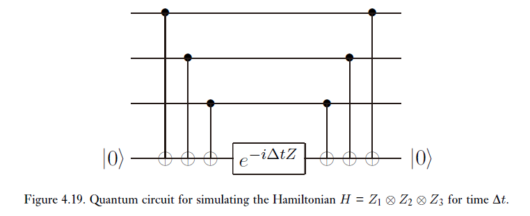
上图就通过引入一个辅助量子比特就精确完成了这个工作。最后得到结果后需要抹除和初态一样的辅助量子比特。
事实上任意Hamilton量若具有$H=\otimes_{k=1}^n\sigma_{c(k)}$都可以类似以上线路完成，其中$\sigma$是Pauli阵。因为X，Y都可以用单量子比特门转换为Z门。